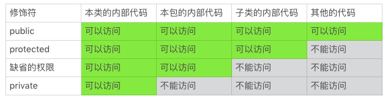

- 00 开篇词 你写的每一行代码，都是你的名片.md.html
- 01 从条件运算符说起，反思什么是好代码.md.html
- 02 把错误关在笼子里的五道关卡.md.html
- 03 优秀程序员的六个关键特质.md.html
- 04 代码规范的价值：复盘苹果公司的GoToFail漏洞.md.html
- 05 经验总结：如何给你的代码起好名字？.md.html
- 06 代码整理的关键逻辑和最佳案例.md.html
- 07 写好注释，真的是小菜一碟吗？.md.html
- 08 写好声明的“八项纪律”.md.html
- 09 怎么用好Java注解？.md.html
- 10 异常处理都有哪些陷阱？.md.html
- 11 组织好代码段，让人对它“一见钟情”.md.html
- 12丨组织好代码文件，要有“用户思维”.md.html
- 13 接口规范，是协作的合约.md.html
- 14 怎么写好用户指南？.md.html
- 15 编写规范代码的检查清单.md.html
- 16丨代码“规范”篇用户答疑.md.html
- 17 为什么需要经济的代码？.md.html
- 18丨思考框架：什么样的代码才是高效的代码？.md.html
- 19 怎么避免过度设计？.md.html
- 20 简单和直观，是永恒的解决方案.md.html
- 21 怎么设计一个简单又直观的接口？.md.html
- 22丨高效率，从超越线程同步开始！.md.html
- 23 怎么减少内存使用，减轻内存管理负担？.md.html
- 24 黑白灰，理解延迟分配的两面性.md.html
- 25 使用有序的代码，调动异步的事件.md.html
- 26 有哪些招惹麻烦的性能陷阱？.md.html
- 27 怎么编写可持续发展的代码？.md.html
- 28 怎么尽量“不写”代码？.md.html
- 29 编写经济代码的检查清单.md.html
- 30丨“代码经济篇”答疑汇总.md.html
- 31 为什么安全的代码这么重要？.md.html
- 32 如何评估代码的安全缺陷？.md.html
- 33 整数的运算有哪些安全威胁？.md.html
- 34 数组和集合，可变量的安全陷阱.md.html
- 35 怎么处理敏感信息？.md.html
- 36 继承有什么安全缺陷？.md.html
- 37 边界，信任的分水岭.md.html
- 38 对象序列化的危害有多大？.md.html
- 39 怎么控制好代码的权力？.md.html
- 40 规范，代码长治久安的基础.md.html
- 41 预案，代码的主动风险管理.md.html
- 42 纵深，代码安全的深度防御.md.html
- 43 编写安全代码的最佳实践清单.md.html
- 44 “代码安全篇”答疑汇总.md.html
- Q&A加餐丨关于代码质量，你关心的那些事儿.md.html
- 结束语 如何成为一个编程好手？.md.html
- 捐赠
39 怎么控制好代码的权力？
在前面，我们讨论了“敏感信息经过授权才可以使用”的这样一条有关编码安全的实践。我们还可以把这个实践扩展到更大的范围：信息和资源，需经授权，方可使用。这个信息和资源，不仅仅包括用户数据这样的敏感信息，还包括计算机代码、产品和服务。
授权使用这些资源，需要遵循“最小授权”的原则。所授予的权力，能够让应用程序完成对应的任务就行，不要授予多余的权力。为了方便，我们可以把“最小授权”这个概念拆分成如下的两个部分来理解：
最小权力的设计
最小限度的授予
最小权力的设计
其实，不管使用什么编程语言，我们编写的代码都会涉及到代码权力的设计。最常见的设计，就是代码的访问控制权限的设计。
一段代码访问应用程序接口的过程，一般需要至少两个步骤，第一步是加载类库，第二步是调用接口。这两个步骤，都需要设计好访问控制权限。
模块的访问权限
下面的例子，就是一个Java模块的权限设计（module-info.java）。这个权限设计，定义了一个example.coding模块。这个模块允许外部代码使用它提供的com.example.coding内部接口。
module example.coding {
exports com.example.coding;
}
这个模块可能还包含其他的接口，比如位于com.example.implement包内的代码。由于模块的定义没有允许外部代码使用除了com.example.coding包空间以外的接口，那么com.example.implement包内的接口，即便是public接口，外部代码也不能直接访问了。
这个模块被加载时，它可以接受的访问控制权限也就相应地确定了。
我们在设计一个模块时，需要尽量把命名空间设计好，开放的接口放在一个开放的包里；内部接口或者代码实现，放在封闭的包里。把开放的部分和封闭的部分，分割开来。这样我们就设计了一道安全的边界，开放包里的代码，经过精心设计和耐心打磨，处理好潜在的安全问题。而封闭包里的代码编写就少了很多安全的顾虑，可以让编写更有效率。
这样的设计，也使得这个模块和外部的接触面更小。接触面越小，代码的安全问题就越少，代码的接口就越容易管理。
模块化是JDK 9引入的一个新特性。
在JDK 9之前，有很多声明为public的内部类，比如com.sun.net.internal包里的类。虽然这些内部的类声明为public，但是它们的真实意图往往是方便内部不同包内的接口共享，而不是开放给外部的应用程序使用。所以，Java的文档会一再强调，应用程序不要使用内部类，即使这些类声明为public。因为这些内部类可能随时被改变，随时被删除。另外，内部类一般也没有规范的文档，实现的代码依赖内部假设，使用场景严格受限，这也让这些类的使用充满了陷阱。
然而，这些内部的public类毕竟有它们的价值和便利的地方，一些应用为了方便，使用了内部类。这不仅给内部类的修改带来了很大的困扰，也让应用程序面临不安定的兼容性和安全性问题。
Java的模块化这个特性，通过增加一个访问控制边界，更好地区分开了开放和封闭的空间，提高了代码的安全性和可维护性。
接口的访问权限
Java接口的访问控制权限，是由我们熟知的三个修饰符来定义的。这三个修饰符就是public、 protected和private。如果三个修饰符都不使用，那就是缺省的访问控制权限。如果加上缺省的权限，那么Java的访问控制权限可以分为四类。
这四类权限定义接口的访问控制，具体可以参考下面的表格。
- 掌握这四类权限，是Java编码的基本功，我们都很熟悉，这里我们强调的，是它们的使用优先级。
在我们日常的编码中，需要遵循“优先最小权限”的原则。也就是说，应该优先使用权限最小的方案。按照这样的原则，Java接口的访问控制权限的使用优先级，从高到低的顺序是：
private
缺省的权限
protected
public
这需要我们养成一个习惯，遇到不是private的接口，我们一定要想一想：这个接口可以改成private接口吗？如果不能，接口需要的最小访问控制权限是什么？我们还可以做些什么事情，来降低这个接口的权限，减小接口的开放程度？
掌握Java接口的访问控制权限虽然是Java编码基本功之一，但要真的用好，落实到设计和编码上，也不是一件容易的事情。由于在编码过程中，我们往往会集中精力在代码的业务逻辑上，忽视了代码权限控制的概念。在OpenJDK的代码评审中，经常可以看到访问控制权限使用的疏忽。即使是对于资深的工程师而言，这也是一个常见的编码疏漏。
Java接口的访问控制权限，是我们可以设置、使用的另外一道安全边界。这道边界，把类、包、子类以及外部代码区隔开来。越开放的权限越需要控制，越封闭的权限越容易维护。
修改的权限
还有一类权限，不太容易引起我们的注意。它就是修改的权限。在编程语言语法层面，Java语言中，这个权限由final修饰符来定义，而C语言使用const关键字。
final的类和方法，不允许被继承，阻断了代码实现的修改；final的变量，不允许被修改，阻断了使用者带来的变更。我们前面讨论过可变量的威胁和继承的危害，限制修改权限，是规避这两类陷阱的最有效办法。
final类：
private final class Foo {
// snipped
}
final方法：
private class Foo {
// snipped
final InputStream getInputStream() {
// snipped
}
}
final变量：
private final class Foo {
private final Socket socket;
// snipped
}
同样的，编码的时候，我们也要养成限制修改权限的习惯：能使用final修饰符的地方，就使用final修饰符；没有使用final修饰符的地方，可以想一想使用final修饰符能不能带来代码的改进；不能使用final修饰符的地方，想一想有没有可变量和继承的陷阱，如果存在这样的陷阱，就要考虑需不需要规避这些陷阱，以及该怎么规避这些陷阱。比如在前面的章节里，我们讨论了可以使用代理模式，当然还有其他的方法。
最小限度的授予
权力这东西，少了处处掣肘，多了飞扬跋扈，是一个很难平衡、很难设计的东西。一个操作系统，设计有只手遮天的root用户；一门编程语言，设计有无所不能的AllPermission和特权代码。
这些方式看似可以带来美好的绝对的权力，却恰恰是攻击者喜欢的命门。只要能够获得这绝对的权力，攻击者就可以为所欲为，轻而易举地跨过所有安全防线。只手遮天的权力，从来都是双刃剑！
我们前面讲过权限的三个要素：权限、权限的主体和权限的归属。
grant Principal com.sun.security.auth.UnixPrincipal "duke" {
permission java.io.FilePermission "/home/duke", "read, write";
};
要把这三个要素使用好，当然需要花费时间设计好这三个要素并且做好权限的分配。这多多少少有一点点麻烦。于是，就有人使用了无所不能的AllPermission。
比如下面例子中的授权策略，就授予了my.dirs目录下的所有类库所有的权限。
grant codeBase "file:${my.dirs}}/*" {
permission java.security.AllPermission;
};
这样的授权策略看着真是痛快、简单。其实，它的复杂性和由此带来的痛苦像是一座隐藏在水面下的冰山。
这个授权要想做到安全，至少需要做到两点。第一点就是my.dirs目录受到严格的保护，不能放入不被信任的代码。第二点就是my.dirs目录下的代码，没有安全漏洞可以泄漏这无所不能的权限。
要想做到第一点，技术本身已经不足以保证，还需要组织管理和规章制度的介入。但是管理和制度的介入，除了让系统维护人员更痛苦之外，还会让安全保障的强度大打折扣。
第二点提到的问题本身就是一个悖论，即使我们有良好的愿望以及强大的实力，也做不到代码没有安全漏洞。所以实际上，这只能是一个永远都不可企及的美好梦想而已。
安全策略的设计和实现，是一个很专业的技术。如果代码有需要，我们需要花点时间学好、用好这样的技术。
限制特权代码
类似于操作系统的root用户和安全策略的AllPermission，还有一种获取绝对权力的方式，那就是使用特权代码。Java中，特权代码的调用接口是AccessController.doPrivileged()方法。
AccessController.doPrivileged()获取特权的方法有两种。第一种形式，是使用调用者的权力。如果调用者是一个绝对权力拥有者，这个方法就拥有绝对的权力。
public static <T> T doPrivileged(PrivilegedAction<T> action)；
第二种形式，是在调用者权力许可的范围内，使用指定的权力。这种形式大幅度缩小了特权代码的权限范围，减轻了安全攻击的风险。
public static <T> T doPrivileged(PrivilegedAction<T> action,
AccessControlContext context,
Permission... perms)；
如果你的代码需要使用特权代码，我建议优先考虑使用指定权力的接口。这会让你的代码避免一定的安全风险。
特权代码要短小
安全策略的设计和实现，以及特权代码的使用，都是很专业的内容。一般而言，我们应该优先考虑编写和使用无特权要求的代码，这样可以尽量规避掉一些不必要的安全风险和复杂性。
如果不能够避免特权代码的使用，那么特权代码的尺寸一定要短小，只使用它处理需要特权的流程，尽量别在特权代码里处理一般的用户数据和业务。
AccessController.doPrivileged((PrivilegedAction<Void>)
() -> {
// Privileged code goes here.
// The code should be short and simple.
// snipped
return null;
}, ...);
小结
通过对最小授权的原则的讨论，我想和你分享两点个人看法：
在编码的过程中，要考虑代码的权力；
权力的设计和使用，要遵循“优先最小权限”的原则。
一起来动手
代码权力的设计，是我们容易忽视的一个问题。即便是熟知的Java修饰符，也不是每个人每次都能运用得恰如其分。如果你观察OpenJDK的代码评审，可能会发现，代码的权力是代码评审者关注的一个重要评审点。恰当运用public、private和final这些修饰符，可以有效地提高代码的安全性和可维护性。
这一次的练习题，我们换个角度，来分析下面这段代码中的权力设计问题。
import java.util.HashMap;
import java.util.Map;
public class Solution {
/**
* Given an array of integers, return indices of the two numbers
* such that they add up to a specific target.
*/
public int[] twoSum(int[] nums, int target) {
Map<Integer, Integer> map = new HashMap<>();
for (int i = 0; i < nums.length; i++) {
int complement = target - nums[i];
if (map.containsKey(complement)) {
return new int[] { map.get(complement), i };
}
map.put(nums[i], i);
}
throw new IllegalArgumentException("No two sum solution");
}
}
欢迎你把你的看法写在留言区，我们一起来学习、思考、精进！
如果你觉得这篇文章有所帮助，欢迎点击“请朋友读”，把它分享给你的朋友或者同事。
© 2019 - 2023 Liangliang Lee. Powered by gin and hexo-theme-book.